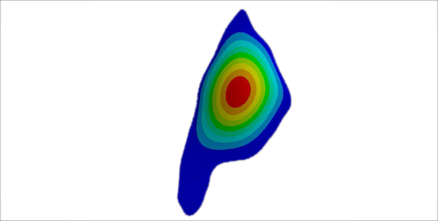

Modal Analysis and Structural Optimization of Cricket Stridulatory Wings|NISER |Ongoing
Supervised by Dr. Rittik Deb
This is my ongoing BS project which involve modal analysis, resonant frequencies, and FEA-driven structural optimization of stridulatory geometries.